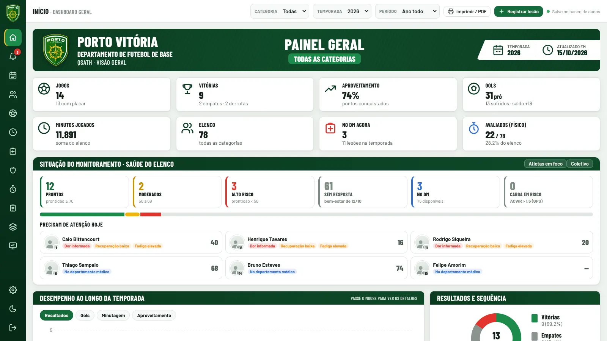
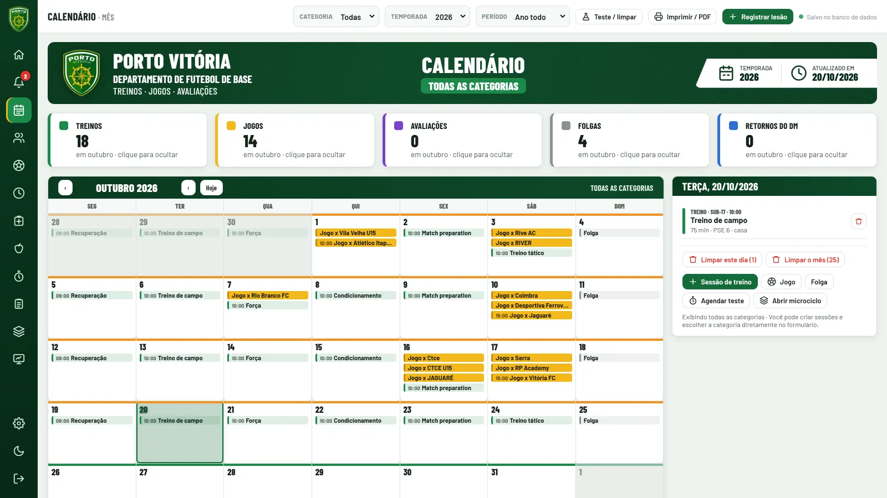
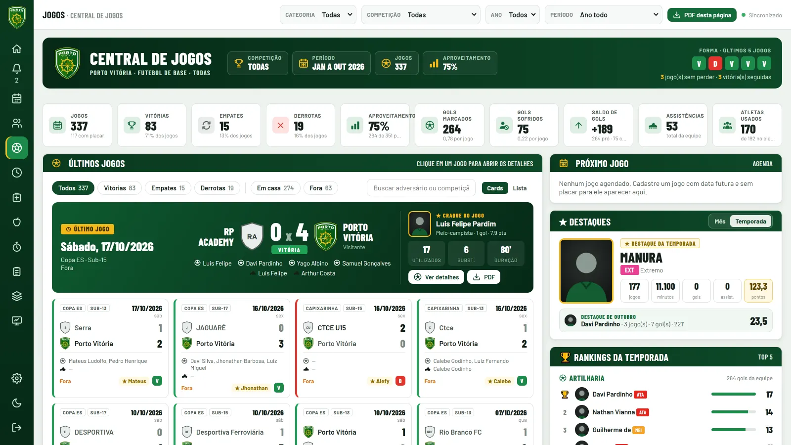

Sistema QSath Projeto individual
Porto Vitória
Sistema do Departamento de Futebol de Base do Porto Vitória: atletas, departamento médico, carga de treino, bem-estar, jogos e relatórios em um lugar só.



- O problema —
- Reunir em um só sistema o acompanhamento do elenco da base feito pela comissão técnica, fisioterapia, nutrição e preparação física.
- O que o sistema faz —
-
- Atletas, fisioterapia e DM, nutrição, avaliação física e maturação
- Monitoramento de bem-estar e PSE, com alertas de carga
- Planejamento, calendário, jogos e minutagem
- Relatórios em PDF e importação de planilhas
- Minha parte —
-
Feito por mim, pela QSATH System, do banco de dados e do servidor à interface.
- Login com perfis: administrador, gestor, funcionário por departamento e atleta
- Área do atleta no celular para responder bem-estar e PSE
- Banco embutido com backup diário e registro de alterações
- Node.js
- Express
- SQLite
- JWT
- HTML, CSS e JavaScript
- Layout para celular